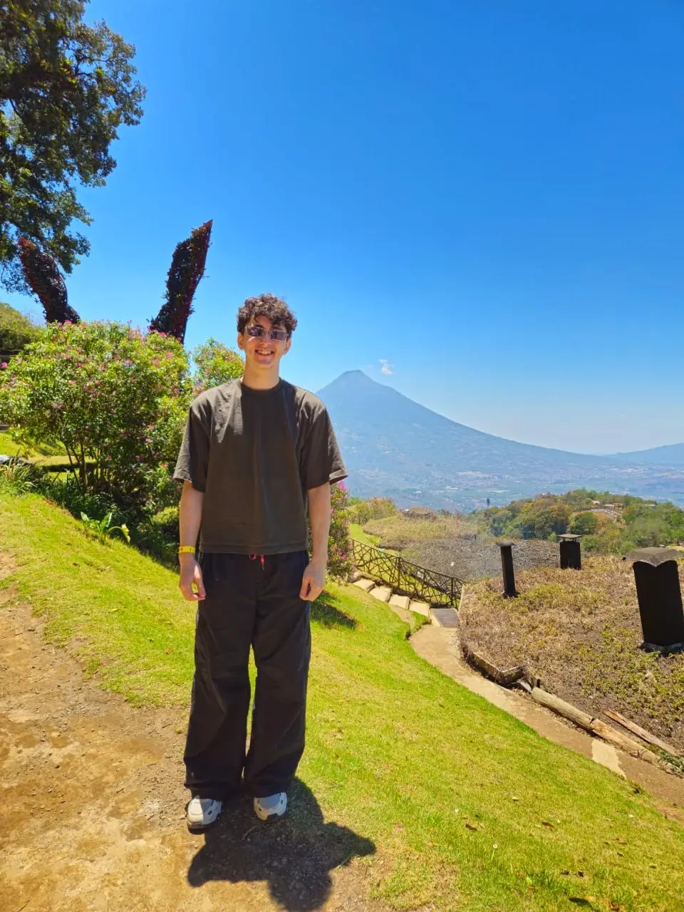

01 — portafolio
fotografia
deslizá para ver más
fotos destacadas
deslizá para ver más
02 — reel
videografia
deslizá para ver más
daydrinking
demo
japan

03 — quien soy
sobre mi
Soy Alex Enamorado, aficionado a la fotografía y la videografía. Me interesa la naturaleza y los detalles pequeños que casi nadie mira.
Fotografío y grabo con luz natural y sin prisa, buscando lo real antes que lo perfecto.
04 — lo que ofrezco
servicios
fotografia
Sesiones de retrato, producto, naturaleza y eventos, con edición cuidada y entrega en alta resolución.
videografia
Piezas documentales, comerciales y de eventos, grabadas en formato cinematográfico.
edicion
Color, ritmo y sonido: llevo cada proyecto desde el material crudo hasta la entrega final.
05 — hablemos
contacto
Cuéntame sobre tu proyecto y te responderé en menos de 48 horas con una propuesta a tu medida.
escribime por whatsapp escribime un correomensaje enviado, gracias. te respondo pronto.